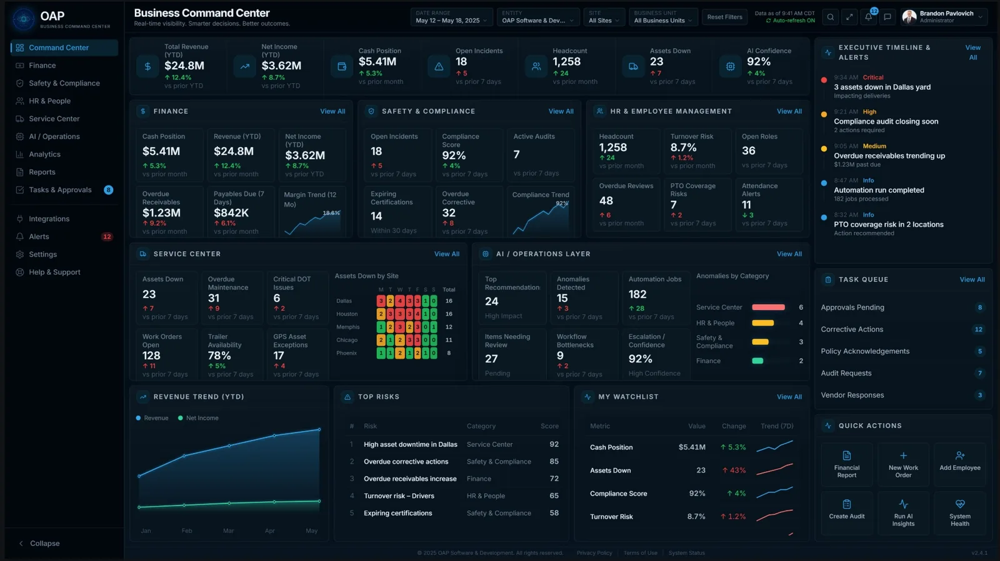
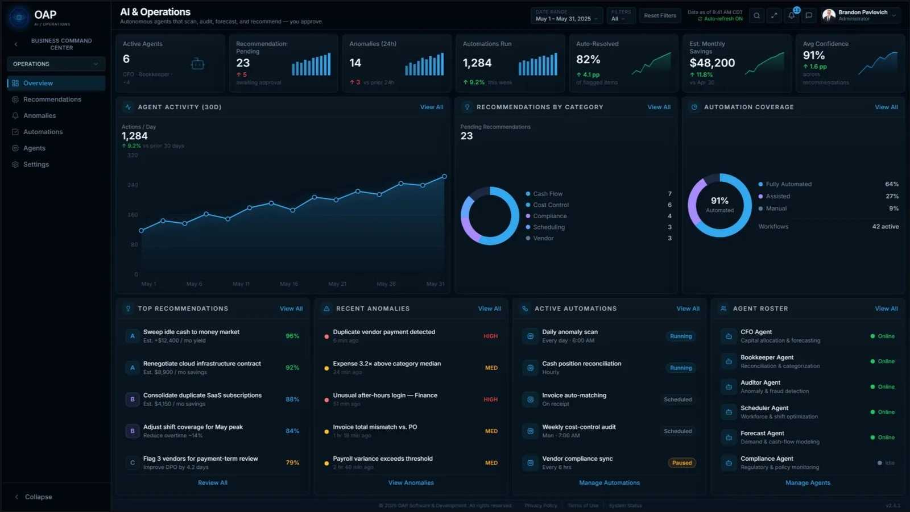
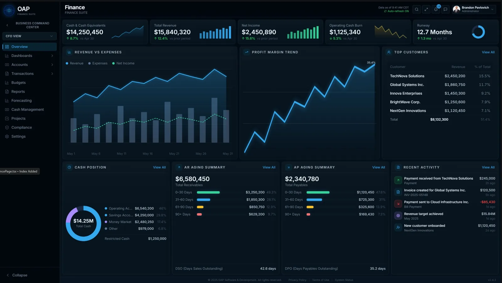
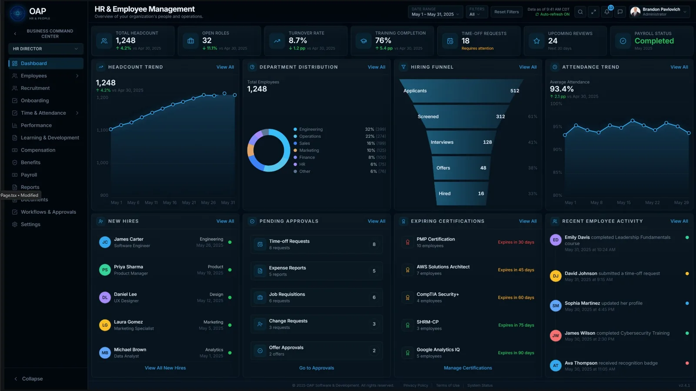
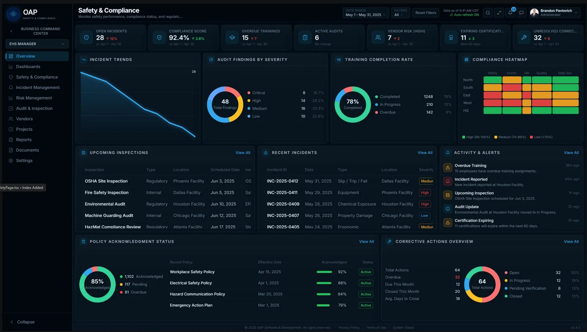
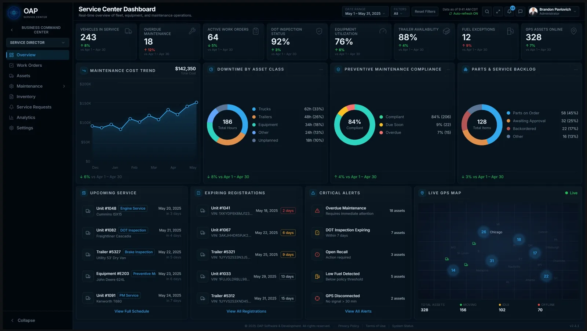
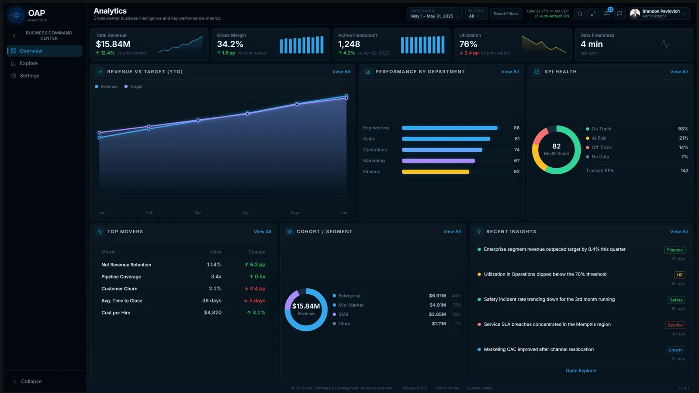
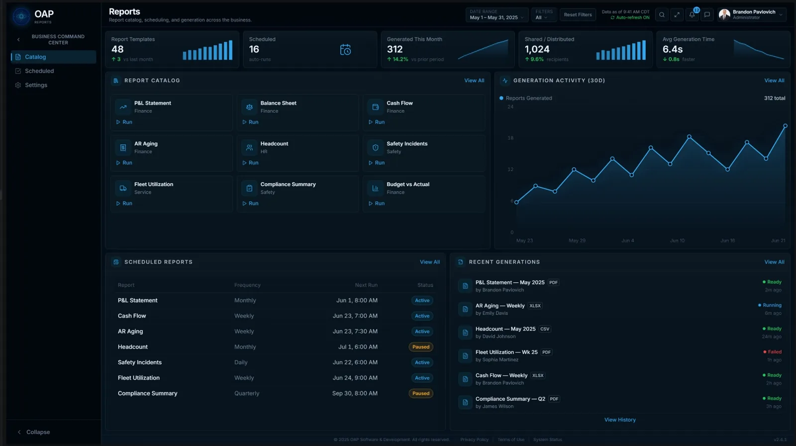
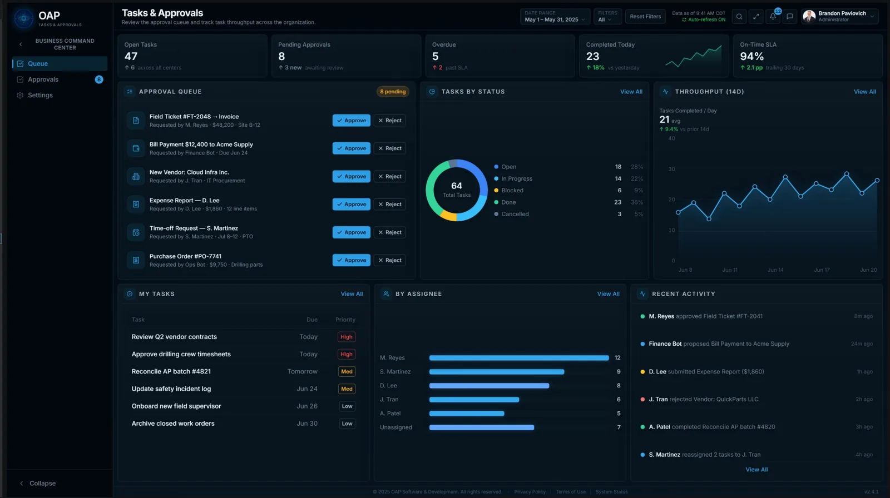

Run the whole business
from one command center.
The OAP Business Command Center puts AI to work across your finances, people, safety, and assets. It records the books, watches every corner of the operation, and hands you the alerts, insights, and recommendations that keep the business efficient, compliant, and profitable, while you stay in command of every decision.
Business intelligence, literally
It makes your business, and everyone in it, smarter about what's going on.
Take the busywork off the owner's plate without taking away control. It is built to shoulder the bulk of the day-to-day record-keeping and monitoring that eats a small business alive, at a price a growing company can justify, and won't want to give up once they rely on it.
OAP's Business Command Center
Monitor and assess your entire operation from one application.
It is the executive view that sits above everything else. Cash position, headcount, open incidents, assets down, automation activity, and the day's most important alerts, all in one place, refreshed in real time.
Instead of stitching together a half-dozen tools and spreadsheets, owners and managers get a single, honest picture of the business and a ranked list of what actually needs their attention today.

You control your data. Business Command Center monitors it.
The AI uploads and records your files automatically, then keeps scanning every part of the application and your data to tell you what's working, what's slipping, and what to do next.
Records & bookkeeping, handled
Drop in a document and it's read, categorized, and posted to the right place: receipts, invoices, statements, field tickets. Your books stay current without the manual data entry.
Always-on monitoring
It continuously scans finance, people, safety, and assets for anomalies such as a duplicate vendor payment, an after-hours login, or an overdue inspection, and flags them before they become problems.
Insights & recommendations
It turns the noise into ranked, plain-English recommendations (sweep idle cash, renegotiate a contract, consolidate subscriptions, adjust coverage), each with the estimated impact and the reasoning behind it.
You always approve
Nothing consequential happens on its own. Recommendations and automations wait in an approval queue, so you keep final say while the software does the legwork.

You approve.
The operations view shows exactly what the AI has been doing on your behalf: what it caught, what it resolved, what it's recommending, and how confident it is, with estimated savings tallied as it goes.
- Recommendations by category: cash flow, cost control, compliance, scheduling, vendors.
- Anomaly detection across payments, logins, and operational thresholds.
- Automation coverage you set the boundaries on: fully automated, assisted, or manual.
It pulls the data in, so you don't have to
The command center connects to your bank, payroll, and equipment so the numbers and records flow in on their own. You'll still use those systems for the fine detail, but what you need to see every day shows up here, and what the books need gets pulled over automatically.
Banking
Balances, transactions, and cash position flow in for daily visibility, and the entries the books need are pulled over automatically, with no manual reconciliation marathons.
Payroll
Payroll runs, labor cost, and headcount sync in so finance and HR stay aligned and the relevant figures land in the ledger without re-keying.
Telematics & monitoring
Equipment and vehicle telematics feed the Service Command Center, so utilization, location, and maintenance signals surface as alerts before they cost you uptime.
Integrations are in testing now and will be available at release. Bring the providers you already use.
Everything the business runs on, in one place
Each command center owns its domain and feeds the executive view above it. The AI works across all of them at once.
Finance Command Center
Bookkeeping, general ledger and journals, AP/AR, cash position, P&L, budgets, and forecasting, with the AI posting records and watching the numbers for you.

HR Command Center
People and payroll, time & attendance, onboarding, performance, and, critically, training and certifications, so the team stays current and the business stays compliant.

Safety & Compliance Command Center
Incidents, audits and inspections, corrective actions, vendor risk, and policy acknowledgment, with the AI tracking what's due and keeping you ahead of compliance deadlines.

Service Command Center
Assets, vehicles, equipment, and trailers, plus work orders, preventive maintenance, inspections, and parts. Catch issues early so there's less downtime and more uptime for real work.

Analytics, reports, and approvals that tie it together
Shared tools work across all four command centers, so the numbers, paperwork, and sign-offs stay consistent everywhere.
Analytics
Cross-business intelligence: revenue vs. target, performance by department, KPI health, and the insights worth acting on.

Reports
A catalog of ready-to-run reports (P&L, balance sheet, cash flow, headcount, safety) generated and scheduled automatically.

Tasks & Approvals
One queue for everything that needs a human yes (invoices, payments, new vendors, expense reports, time-off), so nothing slips and nothing runs without you.

Less software, fewer surprises, more uptime
Built to remove the workload
It's designed to shoulder the large majority of routine record-keeping, monitoring, and reporting, the work that quietly consumes an owner's week.
Compliance you don't have to chase
Training, certifications, inspections, and policy sign-offs are tracked for you, with early warnings before anything lapses.
More uptime, less downtime
Preventive maintenance and asset tracking keep vehicles and equipment working, so your people spend time on the job, not on breakdowns.
Your data stays yours
Designed to run locally or in an environment you control, so your books and records don't have to live on someone else's servers.
Priced to keep
Affordable enough that a small or mid-sized business can easily justify it, and valuable enough that you won't want to run without it.
One application for everything
Finance, HR, safety, and service in a single command center replaces the patchwork of tools and spreadsheets most businesses fight every day.
Where it's headed
The command center grows with the businesses that depend on it. Two things we're building next:
A sixth command center for material-heavy businesses
A deep inventory-management system purpose-built for the businesses that live and die by their material: oilfield companies, pipe yards, construction, and logistics. Designed to pair with the Service Command Center so assets and the material behind them live in one place, down to the joint, the yard, and the load.
- Built for oilfield, pipe yards, construction, and logistics
- In-depth tracking across yards, sites, and loads
The command center, in the field
A companion mobile app that puts the essentials in your crew's hands: manage inventory on the go, pull up SOPs, policies, and safety manuals, submit field tickets, and track time, all from the job site.
- Inventory, field tickets, and time tracking from the field
- Employee access to SOPs, policies, and safety manuals
Want these for your operation? Mention it when you request access and we'll keep you posted as they ship.
Be first to put it to work.
The OAP Business Command Center is coming, and we're inviting a first group of owners and managers to shape it. Request early access and we'll be in touch about fit and timing.